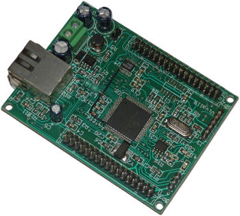

Extface♥ (BETA)
External Interfaces for Cloud-Based Applications
Extface♥ is a solution that provides control of hardware devices from web-based applications. It allows using of Cash Registers, Fiscal and POS printers without physical connection between the device, application server and the end user. Can also be used for reading CDR logs from PBX systems over the internet and actually supports data exchange with all low-speed devices having serial, parallel or USB* interface. Extface server can execute multiple jobs in queue, and privides job progress monitor.
This project is born as a component for my work on a Vehicle Services Cloud-based Software Suite, but I decided to let it go open source, couse I want to give it its own life. Hardware boards are not in mass production yet (I hope at some point become). Documentation is not ready, as I am still working on main workflow and doing beta tests. If you have any questions you can contact me or join the Github project.
Rails 4 gem
Server engine is realized as a Ruby on Rails gem package, which can be readily incorporated in existing projects. It is focused on the following tasks:
- Easy and clear integration.
- Reliability.
- Low consumption of server and client resources.
- Maintenance of a large number of protocols and devices.
Hardware client
Embedded board with Ethernet(RJ45) and Serial(DB9) Interface, that eliminates the need for computer to pair the device and Extface server. It has web interface for startup configuration and can be placed at any point with network access, also behind NAT.
Software client
Windows and *Unix software client can be used for driver development, tests or in producion. It uses cURL library for communication with Extface server and can work with console, file or with real device (COM, LPT, USB* or TTY).
 AlexVangelov maintains
Extface♥
AlexVangelov maintains
Extface♥